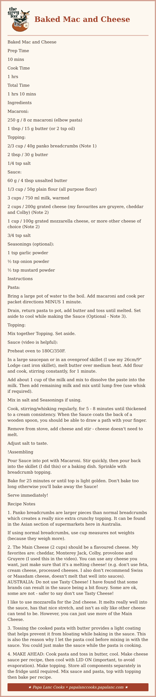

WELCOME
Baked Mac and Cheese
Prep Time
10 mins
Cook Time
1 hrs
Total Time
1 hrs 10 mins
Ingredients
Macaroni:
250 g / 8 oz macaroni (elbow pasta)
1 tbsp / 15 g butter (or 2 tsp oil)
Topping:
2/3 cup / 40g panko breadcrumbs (Note 1)
2 tbsp / 30 g butter
1/4 tsp salt
Sauce:
60 g / 4 tbsp unsalted butter
1/3 cup / 50g plain flour (all purpose flour)
3 cups / 750 ml milk, warmed
2 cups / 200g grated cheese (my favourites are gruyere, cheddar and Colby) (Note 2)
1 cup / 100g grated mozzarella cheese, or more other cheese of choice (Note 2)
3/4 tsp salt
Seasonings (optional):
1 tsp garlic powder
½ tsp onion powder
½ tsp mustard powder
Instructions
Pasta:
Bring a large pot of water to the boil. Add macaroni and cook per packet directions MINUS 1 minute.
Drain, return pasta to pot, add butter and toss until melted. Set aside to cool while making the Sauce (Optional - Note 3).
Topping:
Mix together Topping. Set aside.
Sauce (video is helpful):
Preheat oven to 180C/350F.
In a large saucepan or in an ovenproof skillet (I use my 26cm/9" Lodge cast iron skillet), melt butter over medium heat. Add flour and cook, stirring constantly, for 1 minute.
Add about 1 cup of the milk and mix to dissolve the paste into the milk. Then add remaining milk and mix until lump free (use whisk if required).
Mix in salt and Seasonings if using.
Cook, stirring/whisking regularly, for 5 - 8 minutes until thickened to a cream consistency. When the Sauce coats the back of a wooden spoon, you should be able to draw a path with your finger.
Remove from stove, add cheese and stir - cheese doesn't need to melt.
Adjust salt to taste.
!Assembling
Pour Sauce into pot with Macaroni. Stir quickly, then pour back into the skillet (I did this) or a baking dish. Sprinkle with breadcrumb topping.
Bake for 25 minutes or until top is light golden. Don't bake too long otherwise you'll bake away the Sauce!
Serve immediately!
Recipe Notes
1. Panko breadcrumbs are larger pieces than normal breadcrumbs which creates a really nice extra crunchy topping. It can be found in the Asian section of supermarkets here in Australia.
If using normal breadcrumbs, use cup measures not weights (because they weigh more).
2. The Main Cheese (2 cups) should be a flavoured cheese. My favorites are: cheddar, Monterey Jack, Colby, provolone and Gruyere (I used this in the video). You can use any cheese you want, just make sure that it's a melting cheese! (e.g. don't use feta, cream cheese, processed cheeses. I also don't recommend Swiss or Maasdam cheese, doesn't melt that well into sauces). AUSTRALIA: Do not use Tasty Cheese! I have found that some brands can result in the sauce being a bit floury. Some are ok, some are not - safer to say don't use Tasty Cheese!
I like to use mozzarella for the 2nd cheese. It melts really well into the sauce, has that nice stretch, and isn't as oily like other cheese can tend to be. However, you can just use more of the Main Cheese.
3. Tossing the cooked pasta with butter provides a light coating that helps prevent it from bloating while baking in the sauce. This is also the reason why I let the pasta cool before mixing in with the sauce. You could just make the sauce while the pasta is cooking.
4. MAKE AHEAD: Cook pasta and toss in butter, cool. Make cheese sauce per recipe, then cool with LID ON (important, to avoid evaporation). Make topping. Store all components separately in the fridge until required. Mix sauce and pasta, top with topping then bake per recipe.

WELCOME
Converted from the original file for viewing — open/download the original to edit it.